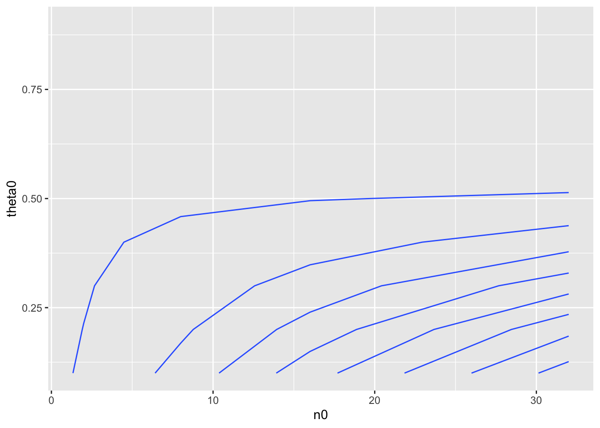
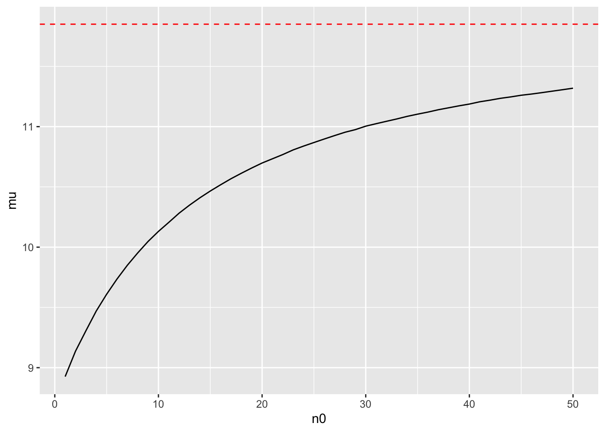

Based on the results of the contour plot, I would explain to someone that it would be relatively difficult to believe that theta is greater than 0.5 because the the probability contour lines yield events which rarely exceed 0.5, or 50%, probability. On the contrary, it may be significantly more likely that the true value of theta is below 0.5.
df = data.frame(expand.grid(n0 = c(1, 2, 8, 16, 32), theta0 = c(0.1, 0.2, 0.3, 0.4, 0.5, 0.6, 0.7, 0.8, 0.9)))
df = df %>%
mutate(a = theta0 * n0) %>%
mutate(b = (1 - theta0) * n0)
results = list()
n = c(1:45)
for(i in n) {
results[[i]] = data.frame(n0 = df$n0[i], theta0 = df$theta0[i], prob = dim(rbeta(100000, sum(df$a[i] + 57), sum(df$b[i] + 100 - 57)) %>%
data.frame() %>%
rename(x = matches(".")) %>%
filter(x > 0.5))[1]/100000, a = sum(df$a[i] + 57), b = sum(df$b[i] + 100 - 57))
}
df2 = bind_rows(results) %>%
data.frame() %>%
mutate(prob = round(prob, digits = 3))
ggplot(df2, aes(x = n0, y = theta0, z = prob)) +
stat_contour() 
See handwritten submission for solution to part a.
Question: Compute and plot the posterior expectation of θB under the prior distributionθB ∼gamma(12×n0,n0)for each value of n0 ∈{1,2,…,50}. Describe what sort of prior beliefs about θB would be necessary in order for the posterior expectation of θB to be close to that of θA.
Solution: See handwritten submission for calculations to derive posterior density function. See below for plot. See handwritten submission for interpretation of plot.
n0 = seq(1, 50, by = 1)
meanList = list()
for(i in n0) {
meanList[[i]] = data.frame(mu = mean(rgamma(100000, 12*n0[i] + 113, n0[i] + 13)), n0 = n0[i])
}
bind_rows(meanList) %>%
ggplot(aes(x = n0, y = mu)) +
geom_line() + geom_hline(yintercept = 11.85, linetype="dashed", color = "red")
Question: Should knowledge about population A tell us anything about population B? Discuss whether or not it makes sense to have p(θA,θB) = p(θA) × p(θB).
Solution: Given the joint density function above, knowledge about population A won’t tell us anything about population B. Their individual probability density functions are independent of each other. It does make sense to have the joint pdf as it is now.